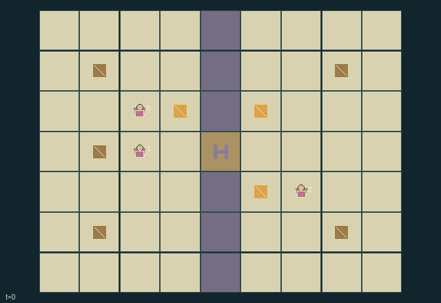

GI212 · Beacon Council

Carry each settlement's finite shipment to its assigned market, using fuel, temporary crossing reservations, escorts and dated signals to manage the single mountain pass.
Identity and original contract
3 independently actionable roles; 12 discrete commands per role; 145 native observation columns per role; original horizon 150 steps. Declared per-step reward range: -2.0 to 4.0. Observation regime: partially_observable.
Source SHA-256: addbf61f680e09e17fbfdf0a28637beb2594f8e5d23804606c7903259bd01204
The objective, rewards, population, map and horizon remain original. A preview is not a success claim.
Objective and gameplay
Carry each settlement's finite shipment to its assigned market, using fuel, temporary crossing reservations, escorts and dated signals to manage the single mountain pass.
A reservation delays competing entry; relinquishing it enables others. An escort spends one actor's fuel/action to protect another caravan against closed-pass entry. Relay fuel buys a delayed observation for remote peers; simultaneous entry contests block all contenders.
- Each settlement has one physical caravan and one original shipment. Homes and destination markets are public.
- The mountain spine has one pass cell. Multiple caravans targeting it together are blocked; occupied cells cannot be entered.
- Spend fuel near home or beacon to reserve the next five ticks. The owner may relinquish the lease earlier.
- Escorting a nearby loaded peer grants three ticks of protection. Protection permits entry during closure and is consumed upon entering.
- Actual storm state is local. A clear pass may begin a three-tick closure with supplied-key probability 0.18 each tick.
- A relay spends fuel and copies the sender's existing observation and timestamp. Delivery takes two ticks at source plus two per chain hop.
- Read a nearby beacon to retain a report; dated reports do not reveal hidden current conditions.
- Each market receipt rewards its own settlement more strongly while benefiting every settlement. All three deliveries finish naturally.
Ending: Natural completion when all three original shipments are delivered; otherwise truncate at tick 150.
What this game explores
Information, sensing & communication: Who knows a fact, when it was measured, and whether it was communicated are separate state variables. Test memory or communication using only the same role-visible evidence.
Commitment, exchange & governance: Promises consume time, liquidity, access or material. Separate an announced agreement from a binding commitment and from its eventual delivery; log cancellation and expiry too.
Complementary production & service: A useful outcome requires ordered stages, scarce equipment or another role's capability. Measure real completed products and resource circulation rather than counting intermediate actions as success.
Joint transport & shared access: Positions, load geometry, occupancy and persistent access constrain whose action can succeed next. Distinguish physical handoff, shared controls and simultaneous force from a cosmetic cooperation label.
Survival, protection & rescue: Protection and repair alter another role's future feasible actions. Record losses, exposure, rescue and infrastructure as well as delivery; survival is determined by the actual kernel.
These are questions supported by rule structure, not observed learning effects.
Play it: operating walkthrough
crucibles play --game gi212Keep Python running and open its printed address. Select this game, set a seed and press Create session. The game itself is always English.
Assign a role range to Host with Assign / take over, or Assign all roles. Invite a second participant with Create player invitation, then assign a disjoint subset. Every original role is available.
For every owned role choose a legal command and press Queue. Arrow keys / WASD queue a declared directional action for the current role camera when available. Space or Advance one joint step advances everyone together. Non-directional games use the selectors.
Unqueued roles use the labelled untrained uniform-legal policy. Take over or release roles before the next step without resetting. Full-state debug is privileged and permanently logged; role cameras preserve permissions. Close the session to retain logs. Server restart does not restore sessions.
Complete command reference
IDs and English labels exactly match the manifest. Availability depends on role, resources, location and phase. An available action can still have no productive effect.
0·Wait
1·Travel north
2·Travel east
3·Travel south
4·Travel west
5·Reserve an unclaimed five-tick crossing lease near own home or a beacon; spend one fuel
6·Relinquish own crossing lease
7·Escort lowest-index adjacent loaded peer for three ticks; spend one fuel
8·Read nearest adjacent beacon report into own memory if at least as recent
9·Relay own dated report from nearest adjacent beacon; spend one fuel
10·Unload own cargo within one tile of own destination market
11·Collect two fuel from own home's finite stock when fuel <= 7
Roles and capability identifiers
These original role names describe capabilities, not interchangeable skins. Check each owned role's legal selector before planning handoffs.
agent_0·Northwest settlement caravan; destination northeast
agent_1·Southwest settlement caravan; destination southeast
agent_2·Southeast settlement caravan; destination west market
Information and observation permissions
Public information is the map, settlement/market locations, clock/terminal causes, council reservation/lease and market receipts. Agents, their visible fuel/guard/stock/load, beacons and cargo are observed only within Manhattan radius two. Current pass weather is shown only within radius two of its physical position. Each actor additionally receives its own report and original timestamp. Beacon payloads and timestamps are local; pending packets are never observed. Visibility masks suppress all hidden record data to -1. Legal movement does not reveal hidden actors; weather/lease entry checks only occur when the acting caravan is already adjacent to the pass and can directly see it.
The GIF is full-state debug and may reveal hidden entities or private state. Train on obs[agent], not the picture, state tree or another role's private row. Field slices and visibility are in the original manifest.
Reinforcement-learning integration
import jax
from crucibles_jaxmarl import make
env = make("gi212")
key = jax.random.PRNGKey(0)
key, rk, ak, sk = jax.random.split(key, 4)
obs, state = jax.jit(env.reset)(rk)
actions = env.sample_actions(ak, state)
obs, state, rewards, dones, info = jax.jit(env.step_env)(sk, state, actions)
done = dones["__all__"]Observations are float32 vectors of width 145; actions are scalar int32; masks have 12 entries. Supply all 3 roles each transition. Masked sampling is an engineering reference, not a trained learner.
step_env retains terminal data without reset. step performs outer autoreset and keeps terminal data in info["raw_state"] and info["raw_observation"]. Use dones["__all__"] for episode boundaries; separate completion, failure and time limit in analysis.
JIT or vmap equal identities and shapes. Split independent reset, policy and transition keys. Group different shapes explicitly; do not shrink the population or horizon. Host rendering stays outside training.
Training questions and fair evaluation
Define valid completion from the objective before fitting. Preserve original rewards and also report real deliveries/services, losses, resource state, unresolved episodes and per-role returns. Animation is not a reward signal.
Who knows a fact, when it was measured, and whether it was communicated are separate state variables. Test memory or communication using only the same role-visible evidence.
Promises consume time, liquidity, access or material. Separate an announced agreement from a binding commitment and from its eventual delivery; log cancellation and expiry too.
A useful outcome requires ordered stages, scarce equipment or another role's capability. Measure real completed products and resource circulation rather than counting intermediate actions as success.
Positions, load geometry, occupancy and persistent access constrain whose action can succeed next. Distinguish physical handoff, shared controls and simultaneous force from a cosmetic cooperation label.
Protection and repair alter another role's future feasible actions. Record losses, exposure, rescue and infrastructure as well as delivery; survival is determined by the actual kernel.
Compare memory, communication or centralized critics under matched actor information. Declare critic access; keep actor inputs role-filtered. Match partner/opponent distributions, masks, compute and checkpoint selection. Final tests never enter fitting or selection.
Independent training runs or source-pairing blocks are inferential units; episodes from one policy are not independent training replications. Save hashes, keys, versions, device, time and cost. Negative, zero, failed and indeterminate outcomes are valid. No trained checkpoint or target score is supplied.
Classification and evidence
Overlapping editorial labels are reading aids, not proof of novelty, difficulty, strategic equivalence or learning effects.
- Information, sensing & communication
- Evidence
manifest.task.objective: Carry each settlement's finite shipment to its assigned market, using fuel, temporary crossing reservations, escorts and dated signals to manage the single mountain pass.
- Evidence
manifest.actions.8: Read nearest adjacent beacon report into own memory if at least as recent
- Evidence
manifest.actions.9: Relay own dated report from nearest adjacent beacon; spend one fuel
- Commitment, exchange & governance
- Evidence
manifest.task.objective: Carry each settlement's finite shipment to its assigned market, using fuel, temporary crossing reservations, escorts and dated signals to manage the single mountain pass.
- Evidence
manifest.actions.5: Reserve an unclaimed five-tick crossing lease near own home or a beacon; spend one fuel
- Evidence
manifest.actions.6: Relinquish own crossing lease
- Complementary production & service
- Evidence
scene.rules.7: Each market receipt rewards its own settlement more strongly while benefiting every settlement. All three deliveries finish naturally.
- Joint transport & shared access
- Evidence
manifest.task.objective: Carry each settlement's finite shipment to its assigned market, using fuel, temporary crossing reservations, escorts and dated signals to manage the single mountain pass.
- Evidence
manifest.actions.10: Unload own cargo within one tile of own destination market
- Evidence
scene.rules.1: The mountain spine has one pass cell. Multiple caravans targeting it together are blocked; occupied cells cannot be entered.
- Survival, protection & rescue
- Evidence
scene.rules.3: Escorting a nearby loaded peer grants three ticks of protection. Protection permits entry during closure and is consumed upon entering.
Source, receipts and preview limits
The world-only English GIF replays saved untrained legal actions through the original kernel. At most 25 actual endpoints include initial and terminal state; no invented interpolation. It is full-state debug, not the role observation.
Original source, observation slices, manifest and mechanism
Native receipt · Presentation receipt
Engineering passes do not establish learning. Nonzero floating differences remain recorded and undetermined; no new tolerance was introduced. Human scores remain unverified.